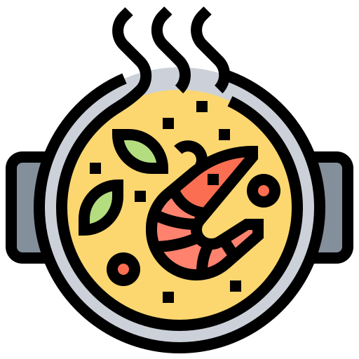
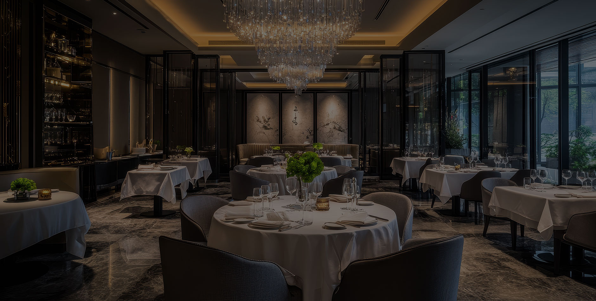
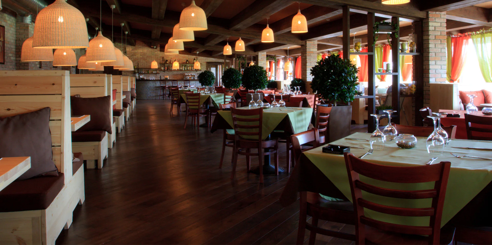

El aroma valenciano en solo un bocado.

Deléitese con nuestra carta variada de comida española desde lo más profundo de la cocina tradicional valenciana.


Deléitese con nuestra carta variada de comida española desde lo más profundo de la cocina tradicional valenciana.

Descúbrenos en las calles de nuestra preciosa Comunidad Valenciana en el Restaurante El Socarrat, tu próximo destino en la Calle de los Azahares 47, 46099 Valencia. Te ofreceremos un servicio personalizado con una carta variada, desde los platos más tradicionales de la cocina de tu infancia, hasta la alta cocina innovadora de nuestros experimentados y preparados chefs, acompañado del ambiente que necesitas. ¡Prepárate para viajar a la propia costa del Levante!
Ver Menú